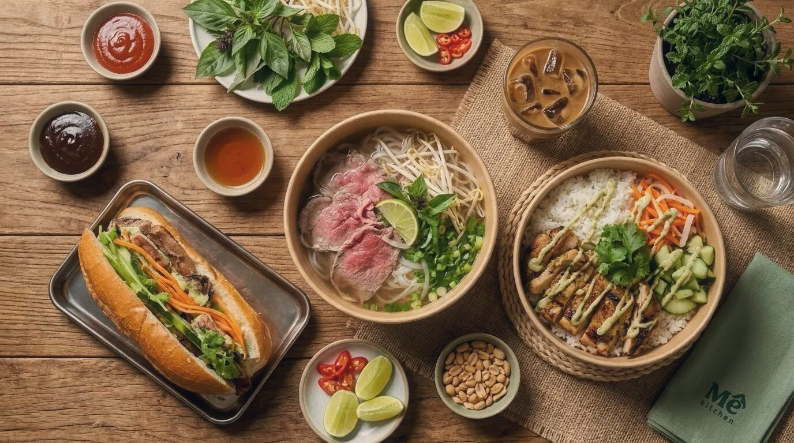
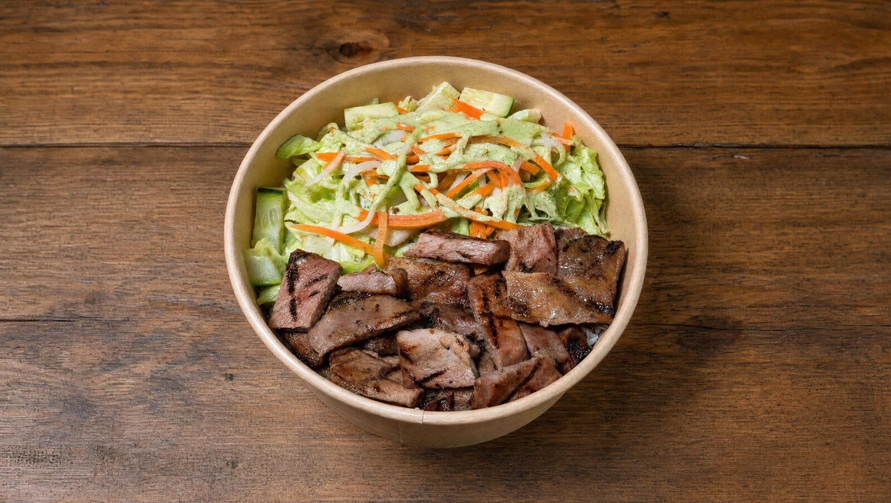
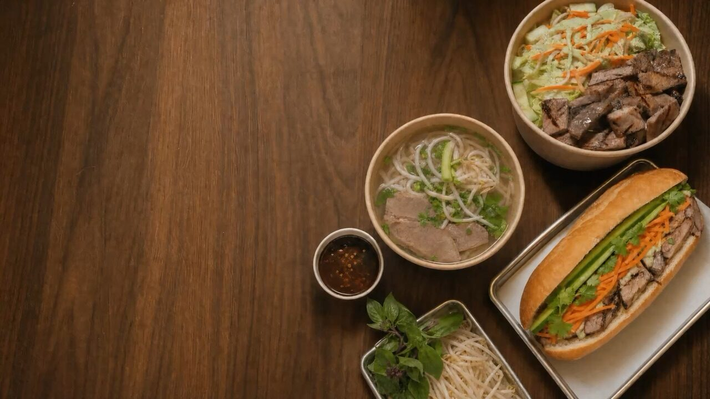
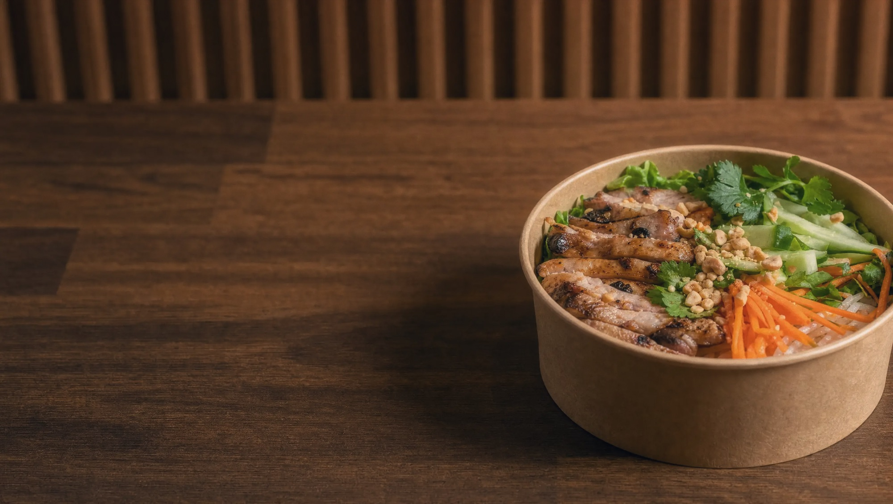
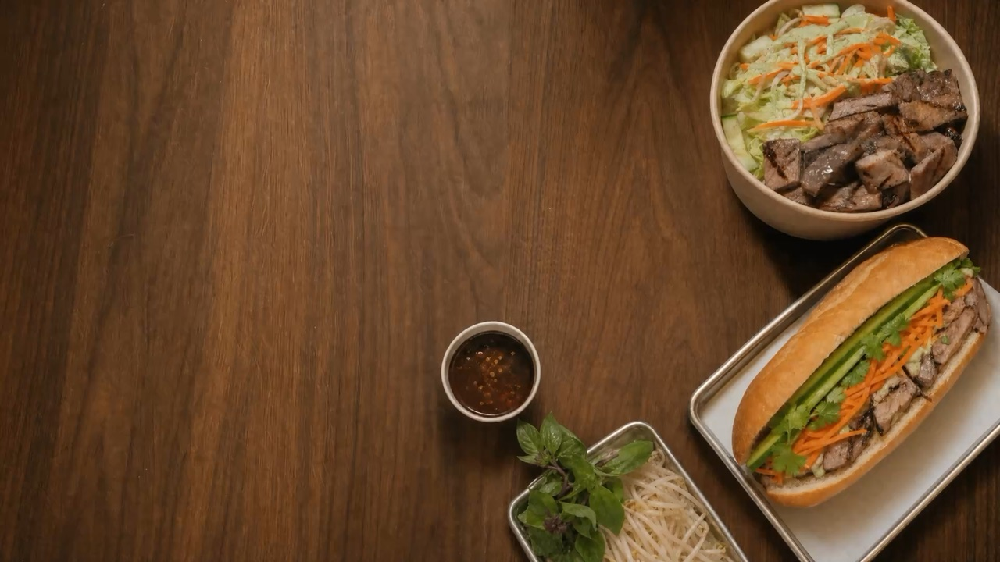

Phở.
Bánh mì.
Rice bowls.
Order on your phone, walk in, walk out. Twenty-four hour broth, twenty-minute lunch.
- Order ahead
- Ready when you arrive
- Veg options
- Open late

Order ahead,
walk straight out
Pick it on your phone, we start it when the order lands, and it is bagged and waiting by the time you reach the counter. No queue, no ticket number, no standing about.

Eat well
on the run
We started Mê Kitchen because the Vietnamese food we grew up loving usually asks for an hour nobody has. Everything here is cooked to order at the counter — phở, bánh mì, rice bowls, spring rolls and Vietnamese coffee — made with quality ingredients and nothing left standing around. Same food, done properly, handed over fast enough to eat on the run.



Get in touch
However your visit went, we want to hear about it — it is the quickest way we get better. Ask about a large order, tell us what you thought, or talk to us about joining the team. Every message comes straight to us, and we read all of them.
- Emailmekitchen.wa@gmail.com
- Address4213 University Wy NE, Seattle, WA 98105
- Hours11am–9pm Mon–Sat, closed Sunday
Thank you — we have got your message and will get back to you soon.